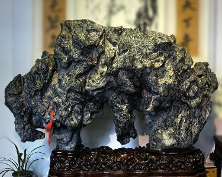
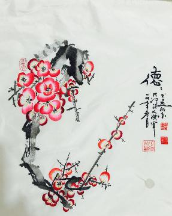
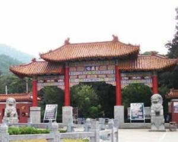
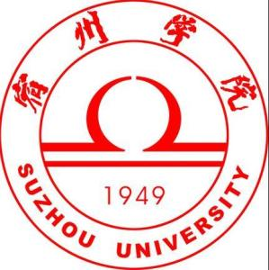
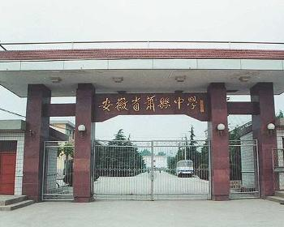

灵璧石，也称磬石、八音石，是一种产于中国安徽省灵璧县的奇石，中国四大名石（灵璧石、太湖石、昆石、英石）之一。灵璧磬石远在三千年以前就已经被人们确认为制磬的最佳上乘石料，并且对其进行大量的开采和利用。从1950年在河南安阳殷墟出土的商代“虎纹石磬”就是实物的佐证。这面“虎纹石磬”横长84厘米，纵高42厘米，厚2.5厘米，上面以刻有虎纹装饰图案而得名之。此磬出土于一座殷王陵大墓中，专家认为此件原是殷王室使用的典礼重器。并且确认为灵璧磬石所造。“虎纹石磬”现为中国历史博物馆收藏，被列为国宝，载入我国“第一部专家撰述国宝鉴赏读物”的《国宝大观》中。国家邮电部并印制纪念邮票发行。

在中华五千年悠久的历史文化长廊中记载了辉煌灿烂的文字载体关于文字的历史发展领域在对文字的记录形式有甲骨文、金文、篆书、象形文字、会意文字、以及我们所熟知的楷、行、隶、草、字体。唯独对“梅花篆字”的历史记录却甚少听闻。但是，不可否认她是我们中国文化艺术演化进步的结果，是我们祖先的聪明和智慧的结晶。可见我们的祖先在很久以前就已经想到把绘画和书法巧妙结合在一起，集绘画与书法于一体。从感官上看上去画的就是一幅画，画的就是梅花，岂不知在这幅画中所暗藏的玄妙之处就在于里面暗藏着“文字”，先人运用梅花的花瓣惟妙惟肖的植入到枝干中去。给人一种“花中有字，字画相融的独特艺术效果。现已列入世界吉尼斯纪录 非物质文化遗产保护名录，国家版权保护中心认证保护。

皇藏峪古称黄桑峪，因峪中长满黄桑而得名。这里冈峦起伏，林木参天，岭上坡下，繁衍着松柏、黄桑、青檀等146种木本植物、700余种草本植物，并有58种鸟类在此栖息，还生存有珍奇的皮毛兽水獭、黄鼬、狐狸等，是淮北地区唯一能反映历史上生物群落面貌的区域 。 皇蒇峪属暖湿带落叶阔叶林区，森林景观有突出的特点：一有：古木参天、躯干苍古、成群连片、盘根错节、绿茛如盖的形态美；二有：春天繁花似锦、夏季郁郁葱葱、秋天叶红果熟、冬有银装素果的季相色调美；三有：风吹林涛如海，林中鸟语虫鸣、山涧清泉四出、晨有薄雾、暮有流云的动态美；四有：浓郁清爽、花草芬芳、鲜果诱人的感应美。皇藏峪景点分布范围较广，比较集中的有瑞云寺和天门寺两个景区。
地锅鸡是山东、江苏、安徽等地的汉族名菜。地锅菜起源于苏北和鲁南交界处的微山湖地区。地锅鸡的主要食材为鸡肉、白面粉、玉米粉、鸡蛋。地锅菜的汤汁较少，口味鲜醇，饼借菜味，菜借饼香，具有软滑与干香并存的特点。从前，在微山湖上作息的渔民，因船上条件所限，往往取一小泥炉，炉上坐一口铁锅，下面支几块干柴生火，然后按家常的做法煮上一锅菜，锅边还要贴满面饼，于是便产生了这种饭菜合一的烹调方法。现有厨师将传统地锅菜的制法加以改良，从而推出了地锅豆腐、地锅鸡、地锅牛肉、地锅鱼、地锅三鲜、地锅小龙虾等好吃的地锅佳肴。

宿州学院是安徽省省属全日制普通本科院校，是安徽省示范应用型本科高校、安徽省高等教育振兴计划“地方应用型高水平大学建设项目”高校。
学校前身是创建于1949年的皖北宿县专区师范学校，1983年2月升格为宿州师范专科学校，2004年5月升格为普通本科院校，更名为宿州学院，2008年获得学士学位授予权，2014年通过了教育部本科教学工作合格评估。
截至2018年6月，学校占地1146亩，预留用地1160亩，建筑面积44.47万平方米，教学科研仪器设备总值18000余万元，馆藏图书465.78万册；设有15个二级学院，61个普通本科专业；全日制在校生17360人，成人教育生3600人；有专任教师738人。
雪枫公园是为纪念以彭雪枫将军为代表的抗日民族英雄而建设的一座集纪念瞻仰、 爱国主义教育、 国防教育及休闲旅游等多种功能于一体的大型城市公园，是宿州市规模最大的爱国主义教育基地。

萧县中学（Xiaoxian Secondary School of Anhul Province），原梅村中学，位于宿州市萧县城南梅村，远离闹市，空气清新，环境优美，兼有学园花园之美誉。学校始创于1942年，校址几经变迁，学校也几经分合。1948年，校址定于城南梅村，故有梅村中学之称。1953年，被确定为江苏省九所省属重点中学之一。1955年因区划的原因，被确定为安徽省重点中学。2000年4月，被省教育厅正式批准为安徽省示范性普通高中。现在，学校正积极创办国家级示范高中。其校训是“守时、守信、成人、成事”。
坠子戏是河北省、安徽省的传统戏剧。
坠子戏来源于说唱形态的曲艺坠子，因以“坠子弦”（今称“坠胡”）为主要伴奏乐器而得名，广泛流传于河南、河北、安徽、山西、北京等地。坠子是由流行在河南、河北和皖北等地的曲艺道情、莺歌柳书、三弦书、坠子书等结合形成的，坠子戏以河南坠子的曲调为基础，吸收京剧、豫剧的一些表演方法，最终形成独具一格的地方戏曲剧种。
坠子戏在2008年6月7日入选第二批国家非物质文化遗产目录
陈晓卿，1965年出生于安徽灵璧，知名美食家，曾为中央电视台社教中心文化专题部《见证·影像志》栏目的制片人，中央电视台高级编辑。1986年毕业于中国传媒大学（原北京广播学院），主修摄影，同年被推荐免试攻读硕士研究生，研究方向为摄影美学。1989年毕业后进入中央电视台，担任《地方台30分钟》编导。1991年开始创作电视纪录片，计有《孤岛记事》（30分钟×1集），获电视“星光奖”二等奖；2010年执导《森林之歌》；2012年执导《舌尖上的中国》、《舌尖上的中国2》，获得中国广播影视大奖（第23届“星光奖”）电视纪录片大奖。2015年6月14日，陈晓卿通过博士学位研究生的初审。2017年10月23日，陈晓卿正式从央视离职。2018年11月20日，凭借《风味人间》获第十九届中国视频榜推委会特别大奖。
后梁太祖[1]，即朱温（852年12月9日-912年7月18日），出生于宋州砀山午沟里（今安徽砀山县），五代时期梁朝第一位皇帝（907-912年在位）。
朱温为建新朝在滑州白马驿残暴的滥杀以裴枢为首的朝臣，酿成“白马驿之祸”，后逼迫唐哀帝禅位。他即位后求贤若渴，努力提拔有才之士，压制权豪，制定严厉的军法，奖励农耕。但他晚年荒淫，强奸儿媳，使后世恶评如潮。912年，他被亲子朱友珪所弑，卒年61岁，谥号神武元圣孝皇帝，庙号太祖，葬于宣陵。
黄河故道，在今河道以前的河道。从下游自河南武陟、荥阳以下，河道时有变迁。见于历史记载的大小决徙粗略统计约达一千五六百次，极大多数集中在下游。下游故道略呈一折扇形，最北经由今河北霸州市（旧称霸县）、天津海河入海，最南经由颍水、涡水夺淮河入海（一部分黄河水自淮河循里运河注入长江）。
符离集烧鸡是安徽美食，产地为安徽省宿州市北14公里的符离镇，与道口烧鸡、德州扒鸡、沟帮子熏鸡并成为中华四大名鸡，制作历史已2000余年，风味独特。符离集烧鸡形成于20世纪初，创始人被认为是韩景玉。其原名韩家扒鸡，1951年，政府正式命名为符离集烧鸡，并逐步形成了当地最大的产业。1956年，在全国食品工业会议上被评为中国名菜，列入中国经济出版社出版的《中国名菜谱》。2005年7月18日申报了符离集烧鸡原产地域保护并取得成功，成为国家地理标志产品；2008年，符离集烧鸡成为省级非物质文化遗产。符离集烧鸡地理标志产品保护范围内的生产者，可向宿州市质量技术监督局提出使用“地理标志产品专用标志”的申请，由国家质检总局公告批准。